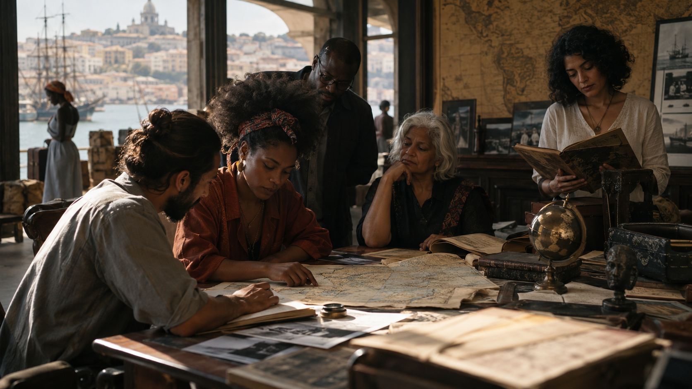

Um panorama comparativo das correntes teóricas — concepções de literatura, a tríade autor–obra–leitor e os métodos de análise em prosa e verso, do início do século XX às correntes emergentes de 2010–2020.
Entre 1900 e 1945, a reflexão sobre literatura deixa de ser apenas preceptística ou filológica e passa a se constituir como campo relativamente autônomo, com objeto e métodos próprios. Psicanálise, mitocrítica, estilística e Formalismo Russo disputam, cada um a seu modo, a pergunta que fundará a disciplina: o que faz de um texto uma obra literária?
A literatura é elaboração simbólica de desejos, conflitos, fantasias, repressões e conteúdos inconscientes.
Autor: sujeito dividido, cujo inconsciente pode manifestar-se na criação. Obra: formação simbólica semelhante ao sonho. Leitor: também mobilizado por desejos e identificações inconscientes.
Investiga conflitos, repressão, desejo, trauma, complexo de Édipo, mecanismos de defesa, condensação, deslocamento, simbolização, personagens e estrutura do enredo.
Analisa símbolos, imagens recorrentes, condensações metafóricas, ambivalências, fantasia, desejo, voz lírica e associações inconscientes.
A crítica posterior abandona frequentemente a psicobiografia simplista e concentra-se no funcionamento psíquico do texto.
A literatura reelabora estruturas míticas, ritos, arquétipos culturais e padrões antropológicos recorrentes.
Autor: atualiza estruturas culturais anteriores a ele. Obra: transformação de mitos e rituais. Leitor: reconhece padrões culturais coletivos.
Identificação de ciclos de morte-renascimento, ritos de passagem, sacrifício, herói, fertilidade, iniciação e padrões míticos do enredo.
Pesquisa de imagens míticas, símbolos, estações, divindades, rituais, ciclos naturais e padrões simbólicos recorrentes.
Prepara o terreno para a crítica arquetípica de Frye e para diversas formas de mitocrítica.
A literatura é uso singular, expressivo e esteticamente organizado da língua.
Autor: sua visão de mundo manifesta-se nas escolhas estilísticas. Obra: estrutura verbal expressiva. Leitor: reconstrói a unidade entre detalhe linguístico e totalidade estética.
Análise lexical, sintática, rítmica, semântica, enunciativa, focalização linguística, recorrências e desvios estilísticos.
Métrica, ritmo, sintaxe poética, figuras, léxico, sonoridade, desvios, paralelismos e relações entre expressão linguística e experiência estética.
Spitzer desenvolve o chamado “círculo filológico”: do detalhe verbal à totalidade da obra e novamente ao detalhe.
Literatura é um uso específico da linguagem caracterizado pela literariedade e por procedimentos que desfamiliarizam a percepção.
Autor: secundário como biografia. Obra: centro da análise enquanto sistema de procedimentos. Leitor: sofre efeitos perceptivos produzidos pela forma.
Distinção fabula/sjuzhet; motivação dos procedimentos; composição; retardamento; paralelismo; repetição; funções narrativas; análise morfológica.
Ritmo, métrica, som, paralelismo, repetição, dispositivos fônicos, sintáticos e semânticos; função poética.
Fundamental para a autonomia disciplinar da Teoria da Literatura e para estruturalismo e narratologia posteriores.
Literatura é forma social e histórica que refrata contradições, relações de classe e modos de produção.
Autor: situado historicamente. Obra: forma social relativamente autônoma. Leitor: sujeito histórico e ideológico.
Relação entre forma narrativa e totalidade social; tipo e personagem; realismo; mediação; classe; ideologia; mercadoria; historicidade do gênero.
Relações entre forma poética, ideologia, classe, experiência histórica, linguagem social e transformação das formas.
Lukács enfatiza mediação e totalidade; Benjamin e Brecht abrem caminhos distintos para técnica, modernidade e política estética.
Literatura é discurso social heterogêneo, constituído por vozes, gêneros discursivos e relações dialógicas.
Autor: organiza vozes sem necessariamente dominá-las. Obra: espaço de interação entre discursos. Leitor: participa da produção responsiva de sentido.
Dialogismo; polifonia; heteroglossia; cronotopo; discurso direto/indireto; estilização; paródia; gêneros intercalados; carnavalização.
Análise da voz, do endereçamento, das relações entre discursos e gêneros; menos sistemática para métrica e estrutura do verso.
Especialmente decisivo para teoria do romance. Critica simultaneamente psicologismo, formalismo isolacionista e monologismo.
A obra é objeto intencional que se atualiza na consciência e contém zonas de indeterminação.
Autor: não é necessariamente a chave explicativa. Obra: estrutura intencional estratificada. Leitor: concretiza potencialidades da obra.
Reconstrução do mundo da obra, objetos representados, perspectivas, temporalidade, lacunas e atos de concretização.
Atenção à experiência fenomenológica da linguagem, imagens, temporalidade, espacialidade, voz e consciência lírica.
Ingarden será decisivo para Iser e a Estética da Recepção.
Literatura é acontecimento de linguagem e interpretação no qual mundo, historicidade e compreensão se articulam.
Autor: intenção não esgota o sentido. Obra: possui historicidade e excede sua origem. Leitor: interpreta desde um horizonte histórico.
Círculo hermenêutico; configuração narrativa; temporalidade; símbolo; metáfora; mundo do texto; fusão de horizontes.
Interpretação de símbolos, metáfora, voz, temporalidade, experiência ontológica e produção de mundo.
Ricoeur articula hermenêutica, metáfora e narrativa de modo particularmente fecundo para estudos literários.
A obra literária é estrutura funcional e dinâmica dentro de um sistema de normas estéticas e sociais.
Autor: elemento do processo, não origem absoluta. Obra: estrutura de funções. Leitor: participa da atualização histórica do valor estético.
Relações estruturais, funções linguísticas, dominante, foregrounding, evolução das formas e sistemas.
Função poética, paralelismo, fonologia poética, ritmo, métrica e relações entre diferentes níveis do poema.
Ponte central entre Formalismo Russo e Estruturalismo francês.
A obra é unidade verbal autônoma, complexa, orgânica e irredutível a paráfrase.
Autor: intenção biográfica deve ser evitada (“falácia intencional”). Obra: centro absoluto. Leitor: resposta afetiva pessoal não prova significado (“falácia afetiva”).
Close reading de ironia, ambiguidade, tensão, paradoxo, símbolos e unidade estrutural. Aplicável à narrativa, embora historicamente voltado à poesia.
Close reading minucioso de imagens, paradoxos, ironia, tensão, ambiguidade, conotação e organização formal.
Um dos fundamentos institucionais do ensino moderno de leitura cerrada.
Literatura participa de repertórios míticos e estruturas imaginativas recorrentes na cultura.
Autor: transforma padrões coletivos. Obra: manifestação individual de estruturas míticas. Leitor: reconhece ou responde a padrões culturais profundos.
Mitos do herói; jornada; ciclos; arquétipos; estruturas de comédia, romance, tragédia e ironia; imagens recorrentes.
Análise de imagens arquetípicas, ciclos sazonais, símbolos, mitos, figuras elementares e estruturas imaginárias.
Frye transforma a crítica arquetípica numa tentativa abrangente de sistematização da literatura.
Literatura é arte mimética organizada segundo princípios de gênero, ação, efeito e composição.
Autor: agente construtor da forma. Obra: totalidade organizada segundo finalidade. Leitor: considerado pelos efeitos retóricos e formais pretendidos.
Análise da ação, causalidade, personagem, trama, gênero, narrador e relação entre meios e efeitos; Booth desenvolve teoria retórica da ficção.
Gênero, unidade, ação, efeito, dicção e composição, frequentemente retomando Aristóteles.
Reação ao monismo metodológico do New Criticism; defende pluralismo crítico.
Literatura é forma histórica relativamente autônoma, capaz de incorporar, negar ou revelar contradições da modernidade capitalista.
Autor: historicamente situado. Obra: mediação estética e social. Leitor: formado dentro da indústria cultural, mas potencialmente capaz de reflexão crítica.
Forma e sociedade; mercadoria; técnica; reprodução; indústria cultural; modernidade; negatividade; montagem; experiência histórica.
Relação entre autonomia estética, forma, negatividade, linguagem, modernidade, fragmentação e sociedade.
Adorno recusa reduzir a obra a simples reflexo social: a própria forma estética é socialmente significativa.
No pós-guerra, a virada linguística consolida o Estruturalismo e a Semiótica como grandes paradigmas: a obra passa a ser lida como sistema de relações, não como expressão isolada. Paralelamente, Fenomenologia, Hermenêutica e Estética da Recepção deslocam parte da atenção para a experiência do leitor e para a compreensão histórica do sentido.
Literatura é ato situado de linguagem, liberdade, responsabilidade e relação com o mundo.
Autor: sujeito situado e responsável. Obra: ato de liberdade/comunicação. Leitor: completa o ato literário pela leitura.
Situação histórica, escolha, liberdade, absurdo, projeto, responsabilidade, narrador e experiência existencial.
Voz lírica, finitude, liberdade, experiência, silêncio, ausência e relações entre linguagem e existência.
Sartre enfatiza engajamento; Blanchot radicaliza a autonomia e impessoalidade do espaço literário.
A obra organiza recorrências imaginárias, temas, espaços, sensações e estruturas de consciência.
Autor: consciência possível reconstruída pela obra. Obra: rede temática. Leitor/crítico: procura penetrar na coerência imaginária da obra.
Recorrências de espaço, matéria, memória, sensações, objetos, temporalidade e imagens ao longo da narrativa ou de toda a produção de um escritor.
Redes metafóricas e imagéticas, motivos, espaços, matérias elementares, sensações e estruturas da consciência poética.
Mais próxima da fenomenologia do que da atual “análise temática” escolar.
Literatura é instituição, prática social e forma inserida em condições de produção, circulação e legitimação.
Autor: agente social. Obra: produto e intervenção num sistema. Leitor: público socialmente estruturado.
Campo literário, grupos sociais, produção editorial, mercado, mediação, instituições, homologia entre estruturas sociais e literárias.
Circulação poética, instituições, posições autorais, formas e valores sociais, públicos e cânone.
Não há um único método: Goldmann, Escarpit e Bourdieu representam sociologias bastante diferentes.
Literatura é forma historicamente mediada por ideologia e contradições sociais.
Autor: sujeito histórico. Obra: autonomia relativa. Leitor: inserido em relações ideológicas e culturais.
Totalidade, mediação, forma social, ideologia, classe, mercadoria, produção e recepção histórica.
Forma poética como sedimentação histórica; linguagem, choque, montagem, negatividade, ideologia e autonomia.
Divergências internas são profundas; não existe “um” método marxista único.
Literatura é sistema de signos governado por relações e estruturas subjacentes.
Autor: perde centralidade. Obra: sistema relacional. Leitor: decodificador de códigos e convenções.
Segmentação; funções; sequências; actantes; oposição binária; níveis narrativos; temporalidade; códigos; estruturas de gênero.
Estruturas fonológicas, sintáticas e semânticas; isotopias; oposições; recorrências; relações paradigmáticas e sintagmáticas.
Procura modelos generalizáveis da produção de sentido.
Literatura é sistema ou processo de significação inscrito numa semiosfera cultural.
Autor: produtor entre sistemas de códigos. Obra: dispositivo semiótico. Leitor: intérprete que atualiza códigos.
Modelo actancial; isotopias; códigos; níveis de significação; semiose; sistemas modelizantes; intertextualidade.
Redes sígnicas; isotopias; figuras; sistemas sonoros e visuais; semântica estrutural e códigos culturais.
A semiótica possui múltiplas tradições: saussuriana, peirciana, greimasiana, lotmaniana etc.
Literatura é sistema modelizante secundário integrado a uma cultura concebida como semiosfera.
Autor: agente cultural. Obra: mecanismo semiótico complexo. Leitor: interpreta mediante códigos culturais.
Fronteiras semióticas, espaço narrativo, modelos culturais, oposição, tradução entre códigos, memória cultural.
Estruturas semióticas, códigos, sistemas métricos e simbólicos, relações entre texto e cultura.
Amplia a análise formal para sistemas culturais.
Literatura organiza-se por modos, gêneros, convenções e transformações históricas.
Autor: trabalha dentro e contra convenções. Obra: atualização/transformação genérica. Leitor: reconhece expectativas de gênero.
Classificação e análise de gêneros narrativos; modos; pactos; tipos de discurso; transformação genérica.
Formas líricas; gêneros; sistemas métricos; modalidades enunciativas e convenções poéticas.
A teoria contemporânea tende a entender gêneros como históricos e pragmáticos, não taxonomias fixas.
Literatura intensifica a organização da mensagem e explora materialmente as possibilidades da linguagem.
Autor: função secundária. Obra: organização verbal. Leitor: percebe equivalências e desvios.
Estruturas linguísticas, enunciação, recorrência, coesão, focalização linguística, desvio e função poética.
Paralelismo, equivalência, ritmo, fonologia, sintaxe, dêixis, imagens e organização verbal.
Jakobson formula a função poética como projeção da equivalência sobre a sequência.
Narrativa é estrutura analisável independentemente de conteúdos particulares.
Autor: distinguido do narrador. Obra: sistema narrativo. Leitor: destinatário textual ou intérprete das estruturas.
Ordem, duração, frequência, voz, modo, focalização, narrador/narratário, níveis narrativos, funções e actantes.
Aplicável a poemas narrativos: voz, tempo, focalização, sequência, persona e organização narrativa; menos adequada à lírica não narrativa.
Fornece grande parte do vocabulário técnico ainda usado na análise narrativa.
A obra existe historicamente através de suas recepções e concretizações.
Autor: uma instância histórica. Obra: estrutura de efeitos e potencialidades. Leitor: agente decisivo.
Horizonte de expectativas; leitor implícito; lacunas; indeterminação; repertório; história das recepções.
Mudanças históricas do horizonte poético; indeterminação; expectativas genéricas; atos de leitura.
Desloca o eixo da obra isolada para a interação texto–leitor–história.
Literatura acontece no ato de leitura e nos processos pelos quais leitores constroem sentido.
Autor: secundário. Obra: estímulo ou estrutura para leitura. Leitor: central.
Sequência da experiência de leitura, comunidades interpretativas, respostas, expectativas, subjetividade e construção do sentido.
Processo temporal da leitura do poema, expectativas, ambiguidades e respostas produzidas pelo texto.
Reúne correntes muito distintas, de Iser a Fish e Holland.
Literatura é discurso e ação comunicativa regida por convenções pragmáticas específicas.
Autor: enunciador situado, mas distinto das vozes textuais. Obra: ato/dispositivo discursivo. Leitor: interpreta intenções e implicaturas dentro de convenções.
Atos locucionários, ilocucionários e perlocucionários; implicaturas; pactos ficcionais; diálogo; situação enunciativa.
Enunciação lírica, apóstrofe, performatividade, dêixis, promessa, invocação e efeitos pragmáticos da voz.
Muito importante para ficcionalidade e teoria contemporânea da enunciação.
O sentido não é imóvel; constitui-se historicamente na relação entre texto e sucessivos horizontes interpretativos.
Autor: histórico. Obra: permanece aberta a atualizações. Leitor: historicamente variável.
Reconstrução de recepções, mudanças interpretativas, horizontes e efeitos históricos.
História da leitura, canonização, mudança de gosto e efeitos de formas poéticas.
Fortemente relacionada à hermenêutica gadameriana.
Narrativa é comunicação retoricamente organizada entre agentes textuais e públicos.
Autor: reaparece como autor implícito ou agente retórico. Obra: ato comunicativo. Leitor: audiência projetada e real.
Narrador confiável/não confiável; distância; ética narrativa; progressão; audiência autoral/narrativa; juízos.
Aplicável à poesia narrativa e à lírica como situação retórica: persona, audiência, ethos e progressão.
Reage à excessiva abstração de determinadas narratologias estruturalistas.
Literatura é produção ideológica específica que também pode tornar visíveis contradições da ideologia.
Autor: constituído por estruturas ideológicas. Obra: produção, não expressão espontânea. Leitor: sujeito interpelado por ideologias.
Silêncios, contradições, ideologia, aparelhos ideológicos, produção textual e relações entre forma e estrutura social.
Ideologia incorporada na voz, forma, léxico, gênero, silêncio e contradição do discurso poético.
Macherey torna particularmente importante aquilo que o texto “não consegue dizer”.
Literatura evidencia a constituição do sujeito pela linguagem, pelo desejo e pela falta.
Autor: sujeito descentrado. Obra: cadeia significante. Leitor: também sujeito do inconsciente e da linguagem.
Significante, desejo, falta, imaginário/simbólico/real, identificação, repetição, fantasia, abjeção.
Deslizamento significante, metáfora/metonímia, voz, desejo, falta, ritmo, ruptura e semiótico/simbólico.
Afasta-se do modelo simples “obra = sintoma do autor”.
A partir de meados dos anos 1960, o Pós-estruturalismo questiona a própria ideia de estrutura estável: o sentido passa a ser pensado como processo instável, disseminado e sempre em jogo com a linguagem, o poder e o desejo — herança que atravessará praticamente todas as correntes posteriores.
Texto como produção instável de diferenças, discursos e relações de poder; rejeição de estruturas universais rígidas.
Autor: descentrado. Obra: textualidade aberta. Leitor: participa da produção de sentidos não totalmente estabilizáveis.
Descontinuidades, códigos, discursos, diferença, aporias, intertextualidade, genealogia, multiplicidade.
Instabilidade semântica, materialidade significante, rupturas, intertextualidade, jogo de diferenças.
Surge em reação às pretensões estabilizadoras do estruturalismo.
Textos produzem tensões que desestabilizam suas próprias hierarquias conceituais.
Autor: intenção incapaz de fechar o texto. Obra: estrutura diferencial e aporética. Leitor: acompanha as autodesconstruções do discurso.
Identificação de oposições binárias, suplementos, aporias, indecidíveis, contradições e efeitos retóricos.
Leitura cerrada de figuras, ambiguidades, paradoxos, iterabilidade, som/escrita e instabilidade semântica.
Não significa “qualquer interpretação vale”; exige extrema atenção textual.
Todo texto se constitui pela transformação de outros textos e discursos.
Autor: rearranja repertórios anteriores. Obra: mosaico/rede textual. Leitor: reconhece e produz conexões.
Citação, alusão, paródia, pastiche, hipotexto/hipertexto, transtextualidade e transformação de gêneros.
Reescrita, alusão, citação, paródia, formas fixas retomadas e relações entre poemas.
Genette diferencia intertextualidade, paratextualidade, metatextualidade, hipertextualidade e arquitextualidade.
Literatura é prática discursiva situada em regimes de saber, poder e enunciabilidade.
Autor: função histórica do discurso. Obra: nó em redes discursivas. Leitor: sujeito também constituído por regimes discursivos.
Formação discursiva, função-autor, arquivo, exclusão, saber/poder, disciplina e genealogia.
Regimes de enunciação, autoria, legitimação, subjetivação e relações entre poesia e instituições discursivas.
Foucault não oferece um método de close reading; oferece ferramentas histórico-discursivas.
Literatura participa da história descontínua dos regimes de discurso e subjetivação.
Autor deixa de ser origem soberana; texto integra arquivos e práticas; leitor é historicamente constituído.
Arquivo, descontinuidade, condições de possibilidade, genealogia de conceitos e práticas.
Aplicação às condições históricas de formas, vozes e categorias poéticas.
Mais forte para história intelectual e institucional do que para análise formal isolada.
Literatura é máquina de produção de desejo, multiplicidades, linhas de fuga e devires.
Autor: multiplicidade, não sujeito soberano. Obra: agenciamento. Leitor: entra em novos agenciamentos.
Rizoma, desterritorialização, literatura menor, agenciamento, fluxo, devir, espaço liso/estriado.
Intensidades, ritmos, devir, desterritorialização da língua, experimentação sintática e sonora.
Particularmente influente em estudos de Kafka e “literaturas menores”.
O texto é produtividade, pluralidade e interseção de códigos, mais que objeto fechado.
Autor: “morto” enquanto garantia do significado. Obra: transforma-se conceitualmente em texto. Leitor: produtor, não consumidor passivo.
Códigos, escritura, intertexto, pluralidade, fragmentação e produtividade significante.
Escritura, materialidade verbal, significância, ritmo, fragmento, jogo textual.
Fundamental para a passagem da noção tradicional de obra à de textualidade.
Literatura torna especialmente visível a instabilidade retórica da linguagem.
Autor não controla os efeitos retóricos; obra é autodeconstrutiva; leitor rastreia aporias.
Tropos, leitura, cegueira/insight, narratividade, indecidibilidade.
Particularmente forte em leitura retórica de poesia romântica e moderna.
Bloom diverge consideravelmente dos demais e desenvolve teoria própria da influência.
Literatura também é processo de escritura, não apenas produto acabado.
Autor: retorna como agente de um processo documentável, sem psicobiografismo. Obra: percurso genético. Leitor/crítico: reconstrói operações de composição.
Manuscritos, rasuras, versões, planos, reordenações, variantes e etapas de produção narrativa.
Variantes lexicais, métricas, estróficas, manuscritos, reescrita e gênese do poema.
Importantíssima para arquivos literários, manuscritos e filologia contemporânea.
Uma família de abordagens desloca o foco da forma textual para as instituições, o poder e as relações sociais que atravessam a literatura: como discursos, ideologias e estruturas de dominação se inscrevem — e são também negociados — na produção literária.
Literatura é prática material inserida numa cultura e em relações históricas concretas.
Todos os polos são socialmente constituídos.
Estruturas de sentimento, dominante/residual/emergente, instituições, forma e história.
Forma poética e estruturas de sentimento; linguagem e experiência social.
Rompe com uma concepção estreita de cultura como apenas “alta cultura”.
Literatura integra um campo maior de práticas, representações e lutas culturais.
Autor, obra e leitor são posicionados por classe, raça, gênero, mídia e instituições.
Representação, hegemonia, codificação/decodificação, identidade, cultura popular e poder.
Mesmos operadores aplicados a poesia, canção, performance, cultura popular e cânone.
Dilui a fronteira rígida entre literatura e outros objetos culturais.
Literatura é intervenção material em conflitos históricos, políticos e ideológicos.
Nenhum polo é autônomo das estruturas sociais.
Historicização radical, poder, dissidência, apropriação, instituições e ideologia.
Historicização das formas e discursos poéticos, canonização e dissidência.
Britânico; próximo, mas não idêntico, ao Novo Historicismo.
Forma literária incorpora, reproduz ou tensiona ideologias.
Autor e leitor são sujeitos ideológicos; obra pode revelar contradições não intencionais.
Leitura sintomática, contradição, silêncio, classe, forma social, narrativa como resolução imaginária.
Forma e ideologia; voz, linguagem, gênero e silenciamentos sociais.
Jameson propõe historicizar radicalmente os textos.
Literatura é produção determinada de modo complexo por estruturas históricas e ideológicas.
Descentra o autor e historiciza obra e leitor.
Causalidade estrutural, ideologia, inconsciente político e forma social.
Discurso, contradições ideológicas e historicidade formal.
Conecta Marx a estruturalismo, psicanálise e pós-estruturalismo.
Literatura constitui um campo relativamente autônomo de posições, capitais e disputas.
Autor: agente posicionado. Obra: tomada de posição. Leitor: público socialmente diferenciado.
Campo, habitus, capital simbólico, posição, trajetória, editoras, prêmios, consagração.
Posição do poeta, instituições, revistas, movimentos, canonização e mercados restritos/amplos.
Extremamente importante para explicar produção e legitimação sem reduzir obra a biografia.
Literatura é sistema dinâmico constituído por subsistemas centrais e periféricos.
Autor e leitor participam de repertórios e instituições; obra ocupa posição sistêmica.
Relações centro/periferia, inovação/conservadorismo, tradução e repertórios.
Mudanças de repertório poético, tradução, formas canônicas e periféricas.
Muito influente nos Translation Studies.
Literatura circula por reescritas e traduções que transformam sistemas culturais.
Autor é apenas uma instância; tradutor e leitor ganham agência.
Estratégias tradutórias, normas, domesticação/estrangeirização, reescrita, circulação.
Métrica, ritmo, imagem, forma fixa, equivalência e recriação poética.
Desloca a tradução do estatuto de operação secundária para prática cultural constitutiva.
Literatura e história são práticas discursivas mutuamente constitutivas.
Autor, obra e leitor atravessados por redes de poder.
Circulação da energia social, poder, arquivos, anedotas históricas, negociação, representação.
Historicização das convenções poéticas, patronagem, discursos sociais e poder.
Evita tratar o contexto como mero “pano de fundo”.
Texto literário é lugar de circulação e negociação de forças culturais.
Tríade inserida em instituições e relações sociais.
Práticas discursivas, circulação, apropriação e negociação cultural.
Mesmos princípios aplicados à produção e circulação das formas poéticas.
Termo usado por Greenblatt para sua abordagem.
Literatura também é objeto material produzido, editado, impresso, vendido, lido e apropriado.
Autor deixa de ser único produtor; editores, tipógrafos, livreiros e leitores entram na cadeia.
Edições, suportes, circulação, práticas de leitura, paratextos, material bibliográfico.
Disposição gráfica, edição, livro de poemas, revistas, circulação e performance material.
Corrige modelos excessivamente abstratos do “texto”.
A forma material do texto participa da construção de significado.
Autor compartilha agência com processos editoriais e leitores.
Variante editorial, tipografia, suporte, edição, circulação e história material.
Quebra de verso, página, tipografia, edição, manuscrito e livro como forma significante.
Particularmente relevante para edição crítica e estudos de materialidade.
Os feminismos literários e os estudos de gênero e sexualidade recolocam a pergunta sobre quem escreve, quem é representado e sob quais condições — revelando como a literatura naturaliza ou contesta hierarquias de gênero.
Literatura é espaço de representação e disputa das relações de gênero e do patriarcado.
Autor, obra e leitor são generificados.
Representação das mulheres; agência; casamento; sexualidade; voz; autoria; cânone; personagens.
Voz lírica, autoria feminina, corpo, tradição poética, imagens de feminilidade e poder.
Questiona tanto representações masculinas quanto exclusão de escritoras do cânone.
Procura reconstruir tradições, formas e experiências específicas da escrita de mulheres.
Autora: central como participante de tradição histórica feminina.
Genealogias de escritoras, gêneros, temas, formas narrativas, instituições e tradição.
Linhagens poéticas femininas, formas, voz, temas, publicação e recepção.
Showalter diferencia crítica feminista de textos masculinos e ginocrítica.
Literatura articula gênero com trabalho, classe, produção e ideologia.
Tríade social e economicamente situada.
Divisão sexual, trabalho, reprodução, classe, ideologia e forma narrativa.
Condições materiais da produção poética, gênero e classe, voz e trabalho.
Combate explicações exclusivamente simbólicas do patriarcado.
Literatura pode desestabilizar estruturas falocêntricas da linguagem e subjetividade.
Autor/autora não é identidade simples; texto e leitura atravessados por desejo e diferença sexual.
Discurso, desejo, corpo, linguagem, abjeção, maternidade e subjetivação.
Experimentação linguística, ritmo, corpo, voz, semiótico, ruptura sintática.
Dialoga com Lacan e pós-estruturalismo.
Escrita pode romper regimes falocêntricos mediante corporalidade, multiplicidade e diferença.
Autor/a e texto tornam-se lugares de descentramento.
Fragmentação, multiplicidade, corporalidade, não linearidade e desejo.
Ritmo, voz, fluidez, ruptura sintática, polifonia e materialidade corporal da linguagem.
Mais uma proposta teórico-política de escrita do que um método fechado.
Literatura deve ser lida na intersecção de raça, gênero, classe e sexualidade.
Tríade racializada e generificada; rejeita “mulher” como categoria universal.
Voz, racialização, gênero, violência, corpo, família, resistência, comunidade e cânone.
Voz negra feminina, tradição oral, corpo, música, ancestralidade, linguagem e resistência.
Fundamental para a crítica posterior à universalização do feminismo branco.
Gênero é categoria histórica e discursiva, não essência natural.
Autor, personagens e leitores ocupam posições de gênero produzidas culturalmente.
Construção discursiva do gênero; performatividade; narrativas identitárias; normas e corpos.
Persona, corpo, voz, performatividade, norma e linguagem de gênero.
Amplia o feminismo para investigação dos processos de produção das identidades.
Literatura articula sistemas simultâneos de raça, gênero, classe, sexualidade etc.
Todos os polos são posicionados por múltiplos eixos de poder.
Intersecção de marcadores sociais em personagem, enredo, voz, espaço, publicação e recepção.
Análise conjunta de corpo, voz, raça, gênero, classe, sexualidade e tradição.
Interseccionalidade nasce no Direito, mas transforma amplamente as Humanidades.
Identidade é produzida pela repetição regulada de atos e discursos.
Autor e leitor não possuem identidades pré-discursivas simples; texto performa posições.
Atos, normas, repetição, falha performativa, corpo, discurso e identidade narrativa.
Performance da voz, gênero, corpo, citação e repetição normativa.
Não significa que gênero seja mera performance voluntária.
Literatura pode revelar instabilidade das categorias de gênero, sexo e desejo.
Tríade atravessada por regimes de heteronormatividade e possibilidades dissidentes.
Desejo, armário, heteronormatividade, temporalidade queer, performatividade e formas dissidentes.
Voz, desejo, ambiguidade, corpo, erotismo, temporalidade e experimentação formal.
Questiona categorias identitárias aparentemente naturais.
Literatura articula sexualidade com racialização, classe, nacionalidade e economia.
Autor, obra e leitor são inscritos simultaneamente em múltiplas relações de poder.
Desidentificação, performance, utopia, racialização, sexualidade e capitalismo.
Voz, performance, arquivo minoritário, afetos e temporalidades queer racializadas.
Corrige tendências brancas e de classe média em determinadas teorias queer.
Literatura participa da produção, contestação e imaginação das categorias corporais e de gênero.
Tríade envolve posições corporais, tecnológicas e identitárias mutáveis.
Transição, corpo, temporalidade, narrativas de identidade, medicina, legibilidade social.
Voz corporificada, nomeação, transformação, temporalidade e formas de autoinscrição.
Campo interdisciplinar crescente.

Raça, colonialismo e diáspora tornam-se eixos centrais de leitura: a literatura é examinada como espaço onde relações coloniais se reproduzem, mas também onde identidades híbridas, resistências e vozes subalternas encontram — ou disputam — expressão.
Literatura é forma estética e arena de representação, identidade e emancipação negra.
Autor negro intervém numa tradição racializada; obra e leitor situam-se em disputas de representação.
Double consciousness, identidade, raça, cidadania, voz, tradição e representação.
Spirituals, blues, jazz, oralidade, voz negra, identidade, resistência e modernidade.
Genealogia indispensável para Black Studies posteriores.
Literatura afirma experiência, história e cultura negras contra colonialismo e assimilação.
Autor como sujeito anticolonial; obra como afirmação cultural; leitor convocado politicamente.
Colonialismo, alienação, identidade, memória e recuperação cultural.
Ritmo, oralidade, imagem, África, ancestralidade, surrealismo e resistência.
Movimento literário, intelectual e político.
Literatura participa das lutas contra dominação colonial e alienação cultural.
Autor e leitor são sujeitos colonizados/colonizadores historicamente constituídos.
Violência colonial, língua, subjetividade, assimilação, nacionalismo e libertação.
Língua colonial, identidade, resistência, voz e imaginário nacional.
Base genealógica decisiva do pós-colonialismo.
Literatura deve articular estética negra, autodeterminação cultural e transformação política.
Autor como agente comunitário; obra orientada para público negro.
Linguagem vernácula, identidade, conflito racial, militância e cultura popular.
Jazz, oralidade, performance, ritmo, spoken word e linguagem negra.
Próxima do Black Power.
Literatura negra possui tradições, intertextualidades e formas próprias, sem estar isolada da cultura dominante.
Autor, texto e leitor inseridos em tradições racializadas.
Signifyin(g), dupla voz, tradição, memória, ancestralidade, raça e discurso.
Oralidade, música, vernacularidade, repetição, tradição e voz negra.
Gates propõe uma retórica especificamente afro-americana.
Literatura participa da construção e contestação de impérios, alteridades e identidades coloniais.
Autor, obra e leitor inscritos em relações coloniais e pós-coloniais; autoria não é neutra.
Orientalismo, discurso colonial, subalternidade, hibridez, mimetismo, nação, contraponto.
Voz colonial/subalterna, língua, hibridismo, resistência, tradução cultural.
Campo heterogêneo; Said, Spivak e Bhabha divergem significativamente.
Literatura e arquivo podem reproduzir ou desafiar apagamentos das populações subalternizadas.
Questiona quem pode falar, representar e ser ouvido.
Silêncio, arquivo, representação, agência, historiografia e poder colonial.
Voz, apagamento, oralidade, tradução e possibilidade/impossibilidade de representação.
Originado na historiografia do Sul Asiático.
Colonialismo e patriarcado devem ser analisados conjuntamente.
Questiona universalização da mulher e autoridade de quem representa o outro.
Gênero, colonialismo, representação, trabalho, agência e subalternidade.
Voz feminina colonizada, língua, corpo, tradução e silêncio.
Intervém simultaneamente no pós-colonialismo e no feminismo ocidental.
Cultura colonial produz identidades ambivalentes e híbridas.
Autor/obra/leitor ocupam espaços culturais negociados.
Mimetismo, ambivalência, hibridez, terceiro espaço e tradução cultural.
Hibridação linguística, mistura formal, voz e negociação cultural.
A noção de hibridez recebeu também críticas por possível abstração das assimetrias materiais.
Literatura emerge de relações, diásporas, misturas linguísticas e histórias transatlânticas.
Autoria e leitura são relacionais, diaspóricas e plurilíngues.
Crioulização, relação, opacidade, diáspora, migração e identidade.
Oralidade, ritmo, multilinguismo, crioulização e poética da relação.
Glissant é central para teorias contemporâneas da relação e opacidade.
Literatura integra circuitos transnacionais de cultura negra que excedem o Estado-nação.
Autor e leitor situam-se em redes diaspóricas.
Migração, escravidão, música, memória, modernidade e dupla consciência.
Música, ritmo, oralidade, memória, travessia e cultura transatlântica.
Desloca análises exclusivamente nacionais.
Raça é construção estrutural e institucional com efeitos discursivos e materiais.
Produção e leitura são racializadas; cânone não é neutro.
Racialização, direito, poder, instituições, narrativas jurídicas e literárias, representação.
Voz, cânone, raça, linguagem, tradição e institucionalização.
CRT nasce no Direito; sua aplicação literária dialoga com Black Studies e crítica racial.
Literatura opera dentro ou contra a persistência da colonialidade do poder, saber, ser e gênero.
Autor, obra e leitor situados geopoliticamente; questiona universalidade epistêmica ocidental.
Colonialidade, epistemologia, fronteira, língua, raça, gênero e modernidade/colonialidade.
Desobediência epistêmica, plurilinguismo, oralidade, cosmologias e formas não eurocêntricas.
Diferente do pós-colonialismo, embora existam pontos de contato.
Literatura indígena deve ser lida a partir de soberanias, epistemologias e tradições próprias.
Autor e leitor são posicionados frente a relações coloniais; obra pode ser prática de soberania cultural.
Soberania narrativa, oralidade, território, parentesco, colonialismo e resurgence.
Oralidade, canto, território, cosmologia, performance e língua indígena.
Rejeita tratar produções indígenas apenas como objetos do pós-colonialismo.
Literatura pode ser espaço de descolonização epistemológica e estética.
Questiona posições eurocêntricas de produção, canonização e leitura.
Fronteira, colonialidade, língua, memória, epistemologias subalternizadas e gênero.
Plurilinguismo, oralidade, epistemologias locais, estética decolonial.
É mais uma família de abordagens que um método textual uniforme.
A crítica latino-americana desenvolve categorias próprias para pensar sua literatura, recusando a simples importação de modelos europeus e voltando-se para as tensões específicas de formação cultural, identidade nacional e posição periférica no sistema literário mundial.
Literatura periférica pode apropriar-se criativamente da tradição estrangeira, devorando-a e transformando-a.
Autor como apropriador/criador; obra como transformação; leitor reconhece tensões entre centro e periferia.
Paródia, apropriação, inversão, montagem, hibridização e diálogo intercultural.
Intertextualidade, paródia, tradução criativa, experimentação verbal e incorporação transformadora.
A Antropofagia é movimento estético-cultural; seus conceitos adquirem grande produtividade teórica posterior.
Cultura e literatura resultam de processos ativos de perda, incorporação e criação cultural.
Autor medeia sistemas culturais; obra transforma repertórios; leitor participa da negociação cultural.
Língua, estrutura narrativa, cosmovisão e tensão entre modernização e culturas regionais.
Hibridização linguística, oralidade, ritmos e imaginários culturais.
Rama transforma o conceito antropológico de Ortiz em transculturação narrativa.
Literatura plena constitui-se pela articulação entre autores, obras e público em continuidade histórica.
A tríade é literalmente estrutural: autor–obra–público forma um sistema.
Relação entre forma e processo social; formação do sistema; gênero; circulação; tradição.
Formação de tradições poéticas, públicos, autores e convenções; forma e processo histórico.
Fundamental para compreender a crítica brasileira moderna.
Literatura periférica negocia assimetricamente modelos importados e condições locais.
Autor situado em periferia cultural; obra reconfigura modelos; leitor inserido em sistema desigual.
Forma importada versus processo local; dependência; imitação, desvio, apropriação e transformação.
Apropriação formal, tradução, cânone, modernização e diferença periférica.
Não constitui escola única; os autores divergem significativamente.
Literatura latino-americana produz-se num espaço diferencial entre repetição e invenção.
Autor periférico reinscreve a tradição; leitor percebe deslocamentos e diferenças.
Intertextualidade, reescrita, paródia, diferença, colonialismo e circulação.
Reescrita poética, tradução, paródia, voz híbrida e deslocamento do cânone.
Conceito crucial do ensaio “O entre-lugar do discurso latino-americano”.
A narrativa latino-americana transforma modernização externa e culturas internas em novas formas literárias.
Autor como mediador transculturador; obra formaliza conflito cultural; leitor reconhece múltiplos sistemas culturais.
Língua, estruturação literária e cosmovisão; oralidade, regionalismo e modernização.
Aplicação possível à poesia por transformação de repertórios linguísticos, míticos e formais, embora formulada sobretudo para narrativa.
Uma das teorizações mais importantes da narrativa latino-americana.
Literaturas latino-americanas podem articular sistemas culturais heterogêneos sem síntese harmoniosa.
Autor, texto e leitor podem pertencer a universos socioculturais não coincidentes.
Heterogeneidade, diglossia, oralidade/escrita, conflito cultural e sujeito migrante.
Plurilinguismo, oralidade, conflito de sistemas e heterogeneidade discursiva.
Importante contraponto a versões excessivamente conciliadoras da hibridez.
A forma literária internaliza contradições específicas da sociedade periférica.
Autor historicamente situado; obra condensa estrutura social; leitor/crítico reconstrói essa mediação.
Análise dialética entre técnica narrativa e processo social; narrador; ideologia; ideias fora do lugar.
Forma poética e estrutura social, quando aplicável; maior desenvolvimento crítico em torno da prosa.
Ao vencedor as batatas e Um mestre na periferia do capitalismo são paradigmas.
Produção cultural moderna combina tradições, modernidades, mercados e mídias de forma híbrida.
Autor, obra e público circulam entre sistemas culturais.
Hibridização, cultura popular/erudita, mídia, mercado, modernidade e consumo.
Mesmos princípios para poesia, canção, performance e circulação midiática.
Mais amplo que a teoria literária estrita.
Questiona a matriz colonial que persiste na produção e hierarquização do conhecimento e da estética.
Tríade atravessada pela geopolítica do conhecimento.
Colonialidade da língua, raça, gênero, arquivo, epistemologia e cânone.
Epistemologias plurais, oralidade, corpo, língua e estética decolonial.
Não deve ser confundida automaticamente com pós-colonialismo anglófono.
Entre 1970 e 2000, outros grandes "giros" teóricos — do discurso ao corpo, da psicanálise lacaniana à teoria da recepção mais radical — mostram a multiplicação e a coexistência de paradigmas que já não se organizam em uma única linha evolutiva.
Literatura pós-moderna problematiza totalidade, representação, história, originalidade e fronteiras ontológicas.
Autor frequentemente aparece como construtor autoconsciente; obra expõe sua artificialidade; leitor é convocado a reconhecer convenções.
Metaficção; historiographic metafiction; ontologia; fragmentação; pastiche; paródia; autorreflexividade.
Colagem, pastiche, citação, fragmentação, intertextualidade e autorreflexividade.
Jameson e Hutcheon divergem fortemente sobre as implicações políticas da estética pós-moderna.
Literatura constitui espaço de encontro ético, alteridade e julgamento.
Autor–obra–leitor estabelecem relações éticas e retóricas.
Julgamentos, responsabilidade, alteridade, empatia, escolhas narrativas e ética do narrador.
Endereçamento, alteridade, testemunho, responsabilidade e encontro com a voz do outro.
Reage à ideia de que questões éticas seriam extrínsecas à forma.
Literatura e Direito compartilham formas narrativas, retóricas e interpretativas.
Autor e leitor aparecem como agentes de interpretação normativa.
Narrativa jurídica, retórica, julgamento, interpretação, voz e justiça.
Retórica, linguagem normativa, testemunho e representação da justiça.
Inclui law in literature e law as literature.
Literatura pode ser estudada segundo suas relações com ambientes, ecossistemas e imaginários de natureza.
Autor, obra e leitor deixam de ser os únicos centros: ambiente ganha agência analítica.
Paisagem, lugar, natureza, representação ambiental e ética ecológica.
Natureza, pastoral, lugar, ecopoética, imagens ambientais e voz não humana.
O termo ecocriticism é associado ao ensaio de Rueckert de 1978.
Literatura é meio de produção, transmissão e disputa da memória cultural.
Autor e leitor participam de comunidades de memória; obra funciona como arquivo/medium.
Memória individual/coletiva, trauma, testemunho, temporalidade, arquivo e esquecimento.
Elegia, testemunho, memória, repetição, voz e forma memorial.
Campo interdisciplinar entre literatura, história e estudos culturais.
Literatura pode ser estudada também como fenômeno observável de leitura e processamento.
Leitor torna-se objeto empírico; obra fornece variáveis textuais; autor é menos central.
Experimentos com processamento, emoção, foregrounding, tempo de leitura e resposta.
Efeitos de ritmo, desvio, metáfora, som e foregrounding medidos empiricamente.
Antecede parte dos atuais estudos cognitivos e quantitativos da recepção.
Efeitos literários podem ser estudados pela interação entre estrutura textual e processos cognitivos.
Obra oferece estímulos; leitor processa; autor não é centro metodológico.
Esquemas, percepção, processamento e estruturas cognitivas da narrativa.
Ritmo, som, metáfora, percepção, ambiguidade e processamento poético.
Será ampliada por Stockwell e outros.
Categorias narratológicas não são neutras em relação a gênero e poder.
Autor, narrador, obra e público são generificados.
Voz, autoridade narrativa, focalização, público, gênero e estrutura narrativa.
Persona, autoridade da voz, endereçamento e gênero na enunciação poética.
Integra análise formal e crítica feminista.
Literatura pode figurar experiências traumáticas que desafiam representação e memória.
Autor/testemunha, texto e leitor entram em relações éticas e memoriais.
Fragmentação, repetição, silêncio, temporalidade, testemunho e narrador traumático.
Ruptura, repetição, silêncio, lacuna, elegia e testemunho.
Teorias posteriores criticam a universalização de modelos psicanalíticos ocidentais de trauma.
Narrativas podem transmitir às gerações posteriores memórias traumáticas que elas não viveram diretamente.
Autor e leitor relacionam-se com memórias herdadas e mediadas.
Fotografia, família, testemunho, transmissão geracional e arquivo.
Memória herdada, imagem, elegia, voz e transmissão.
Muito usada em estudos de Holocausto, diáspora e violência histórica.
Literatura participa da produção social do “normal” e do “deficiente”.
Tríade atravessada por regimes de capacidade e normalização.
Deficiência como dispositivo narrativo, personagem, corpo, norma, acessibilidade e representação.
Corpo, voz, forma, diferença sensorial e regimes estéticos de normalidade.
Questiona o uso da deficiência apenas como metáfora.
Normalidade corporal e heterossexualidade compulsórias são sistemas relacionados.
Autor, obra e leitor posicionados perante regimes de capacidade.
Crip time, corpo, normatividade, sexualidade, dependência e acessibilidade.
Temporalidade, corpo, voz, performance e desvio da norma.
Intersecção entre Disability e Queer Studies.
Literatura representa e produz relações entre humanos, lugares, ambientes e ecossistemas.
Descentra a tríade humana ao considerar ambientes e não humanos.
Espaço, lugar, wilderness, justiça ambiental, agência não humana e narrativa ecológica.
Ecopoética, pastoral, lugar, ritmo ambiental, voz e mundo mais-que-humano.
O campo expandiu-se em múltiplas ondas.
Dominação ambiental e dominação de gênero podem compartilhar estruturas hierárquicas.
Tríade examinada em relação a gênero, corpo, natureza e poder.
Mulher/natureza, exploração, colonialismo, cuidado, corpo e ambiente.
Corpo, natureza, paisagem, gênero, ecopoética e resistência.
Critica essencialismos que equiparam automaticamente mulher e natureza.
Literatura mobiliza processos cognitivos gerais de modo cultural e esteticamente específico.
Autor e leitor são mentes corporificadas; obra é artefato cognitivo-cultural.
Theory of Mind, esquemas, blending, emoção, perspectiva e processamento narrativo.
Metáfora, blending, ritmo, atenção, figura, imagem mental e processamento.
Campo muito heterogêneo e interdisciplinar.
Literatura é comportamento cultural relacionado à evolução da cognição humana e sociabilidade.
Autor e leitor compartilham disposições cognitivas evoluídas; obra explora tais capacidades.
Cooperação, conflito, parentesco, status, seleção sexual, personagens e narrativa.
Emoção, ritmo, padrões cognitivos, temas universais e sociabilidade.
Recebe críticas quando transforma explicações evolutivas em universalismos excessivos.
Literatura organiza intensidades, emoções, afetos públicos e atmosferas.
Autor não monopoliza o afeto; obra produz e circula intensidades; leitor é afetado e responde.
Atmosfera, vergonha, desejo, crueldade, apego, tonalidade, corpo e emoção narrativa.
Ritmo, voz, intensidade, tom, emoção, corporalidade e atmosfera.
Afeto assume sentidos diferentes segundo a tradição teórica.
Literatura pode questionar a centralidade, autonomia e excepcionalidade do humano.
Autor/leitor humanos deixam de ser centros exclusivos; obra pode incluir agências técnicas e não humanas.
Redes humano-máquina, corpo, informação, tecnologia, animalidade e agência distribuída.
Voz não humana, corpo, tecnologia, materialidade e experimentação pós-antropocêntrica.
Consolidou-se como paradigma importante das Humanidades contemporâneas.
Literatura participa da produção das fronteiras humano/animal.
Descentra o sujeito humano da tríade tradicional.
Representação animal, agência, especismo, alteridade e relações multiespécies.
Voz animal, antropomorfismo, espécie, corpo e alteridade.
Frequentemente articulado à ecocrítica e ao pós-humanismo.
Narrativa é fenômeno formal, cognitivo, cultural, medial e experiencial.
Reintroduz leitor, contexto, cognição e mídia sem abandonar análise formal.
Experiencialidade, mundos narrativos, cognição, narrativas não naturais, mídia e contexto.
Narratividade da poesia, voz, experiência, mundo e formas não convencionais.
Amplia, em vez de simplesmente rejeitar, a narratologia clássica.
Ficção constrói mundos possíveis regidos por relações próprias de acessibilidade e verdade ficcional.
Autor projeta mundos; obra estrutura universos; leitor os reconstrói.
Mundo textual, modalidades, personagens, universos possíveis, contrafactuais e acessibilidade.
Mundos líricos, hipótese, possibilidade, modalidade e mundos imaginados.
Interface entre narratologia, semântica e filosofia.
Literatura circula através de fronteiras nacionais, línguas e escalas históricas.
Autor, obra e leitor pertencem a redes de circulação transnacional.
Migração, tradução, circulação, diáspora, escala e redes globais.
Tradução, circulação, multilinguismo e formas poéticas transnacionais.
Questiona a identificação automática entre literatura e nação.
No século XXI, a literatura é cada vez mais pensada em escala global: circulação, tradução e desigualdades de reconhecimento entre literaturas nacionais tornam-se problemas centrais de um campo que já não pode ser pensado a partir de um único centro.
Literatura constitui espaço mundial desigual de circulação, prestígio e consagração.
Autor ocupa posição no espaço literário mundial; obra circula assimetricamente; leitores variam por mercado e tradução.
Centro/periferia, consagração, tradução, autonomia, temporalidade literária mundial.
Circulação internacional de poetas, tradução, capital literário e cânone.
Dá forte dimensão sociológica à Literatura Comparada.
Literatura pode ser estudada em grande escala mediante padrões de corpora, gêneros e sistemas.
Autor individual deixa de ser centro; obra torna-se uma unidade dentro de populações textuais; leitor crítico opera em diferentes escalas.
Quantificação de gêneros, redes, mapas, árvores, padrões lexicais e evolução de formas.
Corpora poéticos, métrica, léxico, temas, redes de influência e mudança formal em escala.
Não substitui necessariamente close reading; muda a escala da investigação.
Uma obra participa da literatura mundial quando circula além de sua cultura de origem e ganha novas vidas na leitura e tradução.
Autor inicia uma obra; circulação e leitores a recontextualizam.
Tradução, circulação, recepção, comparação e recontextualização.
Tradução poética, circulação, transformação formal e recepção intercultural.
Ênfase maior na circulação do que em um cânone fixo de grandes obras.
Literatura mundial é produção de um sistema capitalista mundial desigual e combinado.
Autor/obra/leitor situados em relações centro–semiperiferia–periferia.
Forma literária, desenvolvimento desigual e combinado, circulação e sistema-mundo.
Forma, circulação, centro/periferia e modernidade desigual.
Aproxima teoria literária de Wallerstein, marxismo e economia-mundo.
Literatura mundial deve ser explicada por sistemas materiais e históricos de produção e circulação.
Tríade integrada a sistemas ecológicos, econômicos e institucionais.
Forma e modernidade capitalista; escalas; mercados; regimes literários.
Formas poéticas em sistemas globais e nacionais; circulação e regimes de produção.
Contrapõe-se a abordagens exclusivamente celebratórias da circulação global.
Literatura não apenas representa o mundo; participa de sua imaginação e produção.
Autor, texto e leitor colaboram na constituição de mundos.
Construção de mundo, temporalidade, cosmopolitismo, pós-colonialidade e ética.
Mundos poéticos, imaginação planetária, voz e alteridade.
Aproxima literatura mundial de filosofia e teoria política.
A virada digital introduz métodos quantitativos e computacionais no estudo literário — mineração de texto, visualização de dados, corpora massivos — deslocando parte da análise da leitura individual para a escala de milhares de obras.
Literatura pode ser objeto simultaneamente textual, material, digital, computacional e arquivístico.
Autor deixa de ser unidade privilegiada; textos, leitores, editores, plataformas e algoritmos entram na análise.
Edições digitais, mineração de texto, redes, corpora, estilometria, visualização e modelagem.
Métrica computacional, estilometria, léxico, redes, edição digital e visualização de padrões.
Campo metodologicamente plural, não uma teoria literária única.
Grandes conjuntos de textos podem revelar padrões invisíveis à leitura individual de obras.
Deslocamento da obra individual para populações literárias.
Frequências, gêneros, redes de personagens, mapas, árvores e séries históricas.
Corpora, formas métricas, temas, vocabulário, evolução de estilos.
A relação entre distant e close reading continua em debate.
História literária pode ser investigada por padrões quantitativos em grandes corpora.
Autor e obra tornam-se variáveis de análise agregada.
Topic modeling, estilo, gênero, influência, geografia e tendências históricas.
Temas, léxico, estilo, autoria e mudanças formais em grandes coleções.
Variante fortemente quantitativa da história literária.
Fenômenos literários podem ser modelados computacionalmente sem abandonar questões humanísticas.
Autor, obra e leitor podem ser modelados como dados, categorias ou redes.
Classificação, embeddings, aprendizado de máquina, tópicos, redes, mudança histórica.
Estilometria, prosódia, temas, similaridade, gênero poético e evolução lexical.
Exige atenção a corpus, vieses, amostragem e validade interpretativa.
Produções culturais em larga escala podem ser analisadas computacional e visualmente.
Usuários, produtores e objetos culturais aparecem como dados relacionais.
Padrões em grandes coleções multimodais, visualização e comparação.
Aplicável a poesia digital e corpus, embora o campo seja mais amplo que literatura.
Interseção entre Humanidades Digitais, cultura visual e ciência de dados.
Objetos culturais visuais e multimodais podem ser investigados computacionalmente em escala.
Obra expande-se além do verbal; leitor torna-se também analista de padrões visuais.
Relações texto–imagem, periódicos, narrativas visuais e arquivos multimodais.
Poesia visual, tipografia, página, imagem e multimodalidade.
Especialmente relevante para arquivos digitalizados e cultura visual.
Estilo pode ser operacionalizado como distribuição quantitativa de características linguísticas.
Autor pode ser inferido estatisticamente; obra fornece dados estilísticos; leitor crítico interpreta resultados.
Atribuição autoral, distância estilística, vocabulário funcional, segmentação e mudança de estilo.
Autoria, estilo, métrica, vocabulário, padrões fonológicos e comparação de corpora.
Não deve confundir correlação estatística com explicação literária.
A pós-crítica questiona o hábito de ler a literatura primariamente como sintoma a ser desmascarado, propondo atenção renovada à experiência, ao vínculo afetivo e ao que os leitores efetivamente fazem com os textos.
Literatura não precisa ser lida apenas para revelar dominação oculta; pode fornecer surpresa, reparação, prazer e recursos afetivos.
Leitor ganha destaque em seus modos de relação com a obra.
Atenção a afetos, surpresa, apego, reparação e experiências não redutíveis à denúncia ideológica.
Afetos, prazer, consolo, textura, surpresa e vínculo com a linguagem poética.
Contrapõe leitura reparadora à predominância da leitura paranoica.
Questiona a transformação automática da crítica em operação de desmascaramento.
Leitor/crítico deve também descrever relações e associações, não apenas denunciar ilusões.
Descrição, redes, associações, objetos e mediações.
Atenção a presença, materialidade, vínculo e efeitos, para além do sentido escondido.
Uma das matrizes intelectuais da pós-crítica.
Propõe atenção ao que o texto mostra explicitamente, em vez de pressupor sempre um conteúdo profundo reprimido.
Obra recupera forte visibilidade; leitor descreve antes de desmascarar.
Descrição, padrões visíveis, literalidade, estrutura e materialidade textual.
Forma aparente, superfície verbal, ritmo, sintaxe e descrição rigorosa.
Não equivale a leitura superficial.
Forma volta ao centro, mas concebida historicamente, socialmente e politicamente.
Obra recupera importância sem restaurar autonomia absoluta; autor/leitor permanecem situados.
Formas narrativas, redes, hierarquias, ritmos, totalidades e relações sociais.
Métrica, ritmo, estrofe, gênero, forma e história.
Procura superar falsa oposição entre formalismo e historicismo.
Literatura envolve reconhecimento, apego, choque, identificação e redes de relação, não apenas ideologia oculta.
Leitor retorna como agente de vínculos; obra como ator mediador; autor é uma das relações possíveis.
Apego, reconhecimento, identificação, redes, descrição e usos da literatura.
Presença, afeto, reconhecimento, forma e modos de vínculo poético.
Debate contemporâneo importante sobre os limites da crítica da suspeita.
Descrição pode constituir prática crítica rigorosa, evitando interpretar imediatamente todos os fenômenos como sintomas.
Leitor observa e descreve práticas e formas.
Comportamento, interação, detalhe, superfície e descrição sistemática.
Textura, gesto verbal, forma e descrição de fenômenos poéticos.
Relaciona crítica literária a métodos descritivos das ciências sociais.
A virada material e pós-humana amplia a noção de agência além do sujeito humano, atribuindo importância analítica a objetos, matérias e redes não-humanas na produção e circulação da literatura.
Literatura interroga o humanismo, a excepcionalidade humana e fronteiras humano–máquina–animal.
A tríade é descentralizada por agentes não humanos e tecnológicos.
Cyborgs, informação, redes, animalidade, corpo, tecnologia e agência distribuída.
Voz não humana, corpo tecnológico, matéria, animalidade e formas híbridas.
Paradigma central da virada não humana.
Objetos deixam de ser simples cenário e passam a ser analisados em sua materialidade, resistência e agência cultural.
Autor e leitor relacionam-se com coisas; obra configura relações sujeito–objeto.
Objetos narrativos, materialidade, consumo, mercadoria, memória e agência.
Objeto poético, materialidade, ekphrasis, coisa e percepção.
Diferencia objeto funcional de coisa quando sua materialidade se torna perceptível.
Matéria possui agência e participa ativamente da produção do real e do significado.
Nenhum polo humano é soberano; agência é distribuída.
Agenciamentos materiais, corpo, ambiente, intra-ação, objetos e redes.
Materialidade sonora, corpo, ambiente, objetos e agências não humanas.
É um termo disputado e internamente plural.
Fenômenos culturais são redes de atores humanos e não humanos.
Autor, livro, editor, leitor, objeto e instituição podem atuar como mediadores.
Mapeamento de redes, mediações, circulação, objetos e associações.
Redes de produção e circulação, materialidade e mediação dos poemas.
Mais metodologia sociomaterial que teoria literária estrita.
Objetos possuem existência que excede sua relação com sujeitos humanos.
Descentra radicalmente autor e leitor.
Objetos, ambientes, estranhamento, retirada e relações não humanas.
Poética dos objetos, estranhamento e materialidade.
Frequentemente relacionada a ecocrítica e realismo especulativo.
Questiona filosofias que reduzem realidade à correlação entre pensamento humano e mundo.
A tríade humana perde centralidade ontológica.
Mundos não humanos, objetos, contingência e realidade independente do observador.
Natureza não humana, objeto, matéria e formas especulativas.
Sua aplicação especificamente literária varia bastante.
Literatura deve questionar fronteiras ontológicas e políticas entre espécies.
Tríade ampliada para relações multiespécies.
Animalidade, especismo, agência, representação e ética.
Voz animal, som, corpo, espécie e antropomorfismo.
Relaciona-se ao pós-humanismo, mas não é idêntico a ele.
Matéria e ambiente podem ser concebidos como portadores/produtores de narratividade.
A agência narrativa deixa de pertencer exclusivamente a humanos.
Storied matter, agência ambiental, corpos, substâncias e paisagens.
Ecopoética material, voz mais-que-humana, elementos e substâncias.
Formula formas de narratividade não humana.
Vegetais são agentes e formas de vida que desafiam antropocentrismo e zoocentrismo.
Tríade humana é ampliada para relações vegetais.
Planta como personagem, ambiente, temporalidade vegetal e agência.
Imagens vegetais, crescimento, ritmo, vegetalidade e voz não humana.
Campo emergente ligado às Environmental Humanities.
Vida social e cultural é constituída por relações entre múltiplas espécies.
Agência distribuída entre humanos e não humanos.
Coexistência, simbiose, domesticação, ecologia, extinção e parentesco.
Vozes multiespécies, ambiente, relações e temporalidades não humanas.
Forte interface com antropologia ambiental.
A crise ecológica e a ideia de Antropoceno colocam a relação entre literatura e ambiente natural no centro da crítica contemporânea, questionando também o lugar do humano diante de outras formas de vida e de escalas planetárias de tempo.
Literatura participa da imaginação das relações entre cultura e ambiente.
Ambiente torna-se quarto elemento além da tríade tradicional.
Lugar, wilderness, paisagem, animais, justiça ambiental, risco e agência não humana.
Ecopoética, pastoral, lugar, natureza, som e relação ambiental.
Campo fundador das Environmental Humanities literárias.
Crise ambiental e colonialismo/capitalismo devem ser analisados conjuntamente.
Tríade situada em relações ecológicas e imperiais.
Violência lenta, extrativismo, justiça ambiental, colonialismo e deslocamento.
Paisagem colonizada, ecologia, violência, território e resistência.
Corrige tendências inicialmente euro-americanas da ecocrítica.
Literatura integra questões ambientais a história, filosofia, antropologia e política.
Autor, obra e leitor fazem parte de sistemas ecológicos e institucionais.
Clima, extinção, território, risco, justiça, energia e não humanos.
Ecopoética, clima, espécie, planeta e materialidade.
Guarda-chuva interdisciplinar amplo.
Literatura pode construir formas de imaginação ecológica que ultrapassem o local e a nação.
Leitor é convocado a imaginar pertencimentos multiescalares.
Escala global, biodiversidade, risco, sistemas e imaginação planetária.
Lugar e planeta, escala, espécie e imaginação ecológica.
Busca equilibrar apego ao lugar e consciência planetária.
Pensamento ecológico deve abandonar idealizações românticas de uma natureza exterior ao humano.
Tríade imersa em redes ecológicas estranhas e inseparáveis.
Estranhamento ecológico, hiperobjetos, coexistência e não humano.
Ambiguidade, estranhamento, atmosfera, natureza não idealizada.
Ligada também à Object-Oriented Ontology.
Oceanos, águas e ambientes marítimos são agentes históricos, culturais e materiais.
Tríade reposicionada dentro de ecologias aquáticas.
Mar, viagem, colonialismo, circulação, clima, naufrágio e materialidade oceânica.
Mar, fluxo, ritmo, hidropoética e imaginação oceânica.
Expansão importante da ecocrítica terrestre.
Literatura enfrenta escalas planetárias em que humanidade se torna força geológica desigual.
Autor/leitor precisam negociar escalas humanas e planetárias.
Escala, clima, temporalidade profunda, espécie, capitalismo e risco.
Temporalidade geológica, planeta, clima e descentramento do humano.
Antropoceno é conceito disputado; Capitaloceno e Plantationocene são alternativas.
Literatura participa da representação e imaginação da mudança climática.
Tríade confrontada com escalas temporais e causais não intuitivas.
Climate fiction, risco, catástrofe, temporalidade, escala, probabilidades e justiça.
Clima, atmosfera, perda, futuro, luto ecológico e escala.
Examina também dificuldades formais de representar fenômenos planetários.
Formas culturais estão ligadas a regimes materiais de energia.
Autor, obra e leitor inseridos em infraestruturas energéticas.
Petróleo, infraestrutura, mobilidade, capitalismo, modernidade e energia narrativa.
Energia, paisagem industrial, materialidade e imaginários fósseis.
Torna visível o substrato energético da modernidade literária.
Matéria possui agência narrativa e semiótica.
Descentra integralmente a exclusividade humana da significação.
Corpos, tóxicos, paisagens, matéria narrada/narrante.
Elementos, substâncias, corpo, ambiente e ecopoética material.
Interface entre ecocrítica e novo materialismo.
Espaço, território e mobilidade emergem como categorias de leitura tão importantes quanto o tempo narrativo, examinando como cidades, fronteiras, deslocamentos e geografias organizam a experiência literária.
Literatura produz e organiza espaços sociais, imaginários e geográficos.
Tríade ocupa posições espaciais e geopolíticas.
Espaço narrativo, território, cartografia, cidade, centro/periferia e mobilidade.
Paisagem, lugar, topografia, espaço lírico e geopoética.
Conecta geografia humana e teoria literária.
Espaços reais e ficcionais constituem-se reciprocamente.
Autor, obra e leitor ocupam diferentes perspectivas espaciais.
Multifocalização espacial, estratigrafia, transgressividade, referencialidade e cartografia.
Lugar, paisagem, espacialidade, memória e imaginação geográfica.
Favorece análise comparativa de múltiplas representações de um mesmo espaço.
Literatura possui espacialidade própria e participa da construção cultural do espaço.
Leitura é também prática espacial.
Mapas, lugares, trajetórias, ambientação e redes geográficas.
Paisagem, lugar, itinerário e geografia poética.
Pode combinar interpretação e GIS.
Mapas podem revelar estruturas espaciais de narrativas e sistemas literários.
Obra torna-se parcialmente modelável espacialmente.
Mapeamento de trajetórias, lugares, concentração espacial e redes.
Mapeamento de topônimos, paisagens, circulação e geografia poética.
Pode ser qualitativa ou digital/computacional.
Literatura representa e organiza mobilidade, deslocamento, circulação e imobilidade.
Autor/leitor/obra circulam física e simbolicamente.
Viagem, migração, transporte, fronteira, exílio e circulação.
Movimento, itinerário, exílio, migração e mobilidade lírica.
Expande o foco do espaço estático para práticas de movimento.
As narratologias contemporâneas refinam e expandem o instrumental herdado do estruturalismo — focalização, voz, tempo narrativo — para dar conta de formas narrativas cada vez mais diversas, incluindo mídias além do texto impresso.
Narrativa é estrutura formal + experiência cognitiva, contextual e medial.
Reequilibra obra e leitor.
Mundo da história, cognição, contexto, experiência.
Narratividade da poesia e experiências configuradas poeticamente.
Guarda-chuva de diversas narratologias posteriores ao estruturalismo.
Narrativa organiza experiências, mentes e inferências cognitivas.
Leitor reconstrói estados mentais; personagens funcionam como mentes narrativas.
Theory of Mind, consciência, perspectiva, esquemas e processamento.
Voz, mente, perspectiva e inferência em poemas narrativos/líricos.
Interface com ciência cognitiva.
Narratividade fundamenta-se na representação/evocação de experiência humana.
Leitor naturaliza textos mediante esquemas experienciais.
Experiencialidade, consciência, oralidade e naturalização.
Útil para examinar experiencialidade e voz na poesia.
Redefine narratividade para além da simples sequência de eventos.
Narrativas podem violar deliberadamente leis físicas, lógicas e convenções miméticas.
Leitor precisa construir estratégias para formas impossíveis.
Narradores impossíveis, temporalidades contraditórias, mundos antinaturais, metalepses.
Vozes impossíveis, tempos paradoxais e configurações antimiméticas.
Especialmente útil para literatura experimental.
Forma narrativa e gênero/poder são inseparáveis.
Narrador, autor e público são generificados.
Voz, autoridade, focalização, gênero e público.
Persona, gênero da voz e autoridade lírica.
Integra poética e política.
Formas narrativas podem sustentar ou desorganizar temporalidades e identidades heteronormativas.
Tríade situada em regimes sexuais.
Temporalidade queer, desejo, personagem, enredo e fechamento.
Temporalidade, voz, desejo e identidade não normativa.
Campo recente e plural.
Narrativa é comunicação intencional entre agentes e audiências.
Autor/autor implícito–narrador–público são diferenciados.
Progressão, narrador, audiência, ética, confiabilidade, julgamento.
Situação retórica, persona, audiência e progressão.
Mantém forte diálogo com Booth.
Narratividade pode existir em diferentes mídias.
Autor e leitor tornam-se também usuários/espectadores/jogadores.
Comparação entre literatura, cinema, jogos, quadrinhos, digital etc.
Poesia sonora, visual e digital; transposição entre mídias.
Distingue história de sua materialização midiática.
Narrativas podem combinar palavra, imagem, som, tipografia e interação.
Leitor processa múltiplos modos semióticos.
Relação texto–imagem–som–interface.
Poesia visual, concreta, sonora e digital.
Especialmente útil para mídias contemporâneas.
Narrativas constroem mundos ficcionais modais.
Leitor reconstrói regras dos mundos projetados.
Modalidade, contrafactuais, mundos possíveis e acessibilidade.
Mundos líricos e possibilidades imaginadas.
Muito útil para fantasia, ficção científica e metaficção.
Narrativas organizam cognição e emoção conjuntamente.
Leitor responde emocional e cognitivamente às estruturas.
Empatia, suspense, emoção, identificação e personagens.
Afeto, ritmo, imagem, voz e processamento emocional.
Cruza narratologia com Affect Studies e psicologia.
Narrativa digital pode ser interativa, procedural, multimodal e não linear.
Leitor pode tornar-se usuário ou interator.
Hipertexto, branching, proceduralidade, jogos, narrativas interativas.
Poesia eletrônica, cinética, generativa e hipertextual.
Questiona categorias narrativas formuladas para o livro impresso.
Corpo, mente, cognição e afeto tornam-se objetos de investigação teórica própria, questionando modelos puramente linguísticos ou discursivos ao insistir na dimensão corporificada e pré-discursiva da experiência de leitura.
Literatura explora capacidades cognitivas humanas e culturais.
Leitor como processador ativo; obra como artefato cognitivo.
Perspectiva, blending, inferência, memória, emoção, Theory of Mind.
Metáfora, imagem, ritmo, atenção e processamento.
Não se reduz à neurociência.
Efeitos poéticos emergem da interação entre forma verbal e cognição.
Leitor ganha centralidade cognitiva.
Esquemas, figuração, atenção, deictic shift quando aplicado à narrativa.
Ritmo, métrica, som, metáfora, foregrounding, textura e atenção.
Especialmente poderosa para poesia.
Narrativas modelam experiência, mente e ação.
Leitor reconstrói mentes e mundos.
Consciência, perspectiva, scripts, esquemas, inferências e mundos.
Aplicável a poesia narrativa e representação da consciência lírica.
Herman incorpora conceitos de scripts e processamento cognitivo.
Significado literário está ancorado em corpo, percepção e experiência sensório-motora.
Autor e leitor são sujeitos corporificados.
Metáforas conceituais, espacialidade, movimento e simulação corporal.
Ritmo, imagem, metáfora, percepção sensorial e corpo.
Influente em estudos de metáfora e leitura incorporada.
Ficção explora capacidade humana de atribuir estados mentais aos outros.
Leitor infere crenças, desejos e intenções de personagens.
Mind-reading, níveis de intencionalidade, narrador e personagem.
Persona, estados mentais, voz e inferência do sujeito lírico.
Particularmente produtiva para romance.
Literatura pode provocar, modular ou bloquear empatia narrativa.
Relação obra–leitor é central.
Identificação, personagem, focalização, empatia e técnicas narrativas.
Voz, endereçamento, emoção, identificação e testemunho.
Evita presumir que literatura necessariamente produz maior moralidade.
Literatura produz e circula afetos, atmosferas e intensidades.
Leitor e texto conectados por afetos; autor não é origem exclusiva.
Atmosfera, tonalidade, apego, emoções “feias”, crueldade, desejo.
Tom, ritmo, corpo, emoção, intensidade e voz.
Conjunto heterogêneo de teorias.
Experiência estética pode ser investigada também em relação a processos neurais.
Leitor/receptor torna-se objeto neurocognitivo.
Experimentos de resposta a narrativa, emoção e processamento.
Ritmo, som, metáfora, beleza e resposta neural.
Exige cautela contra reducionismo neurobiológico.
Literatura pode relacionar-se a funções e disposições evolutivas da mente humana.
Autor e leitor compartilham capacidades evoluídas.
Cooperação, conflito, parentesco, status, escolha de parceiros, narrativa.
Padrões emocionais, ritmo, memória e possíveis universais.
Campo controverso quando produz explicações universalizantes.
As correntes emergentes e consolidadas nas décadas de 2010–2020 revelam um campo em plena reconfiguração, no qual novas perguntas sobre tecnologia, identidade, ambiente e leitura convivem — sem que nenhum paradigma único tenha se tornado dominante.
Literatura participa da fabricação cultural da capacidade e deficiência.
Tríade situada em regimes capacitistas.
Corpo, normalidade, acesso, personagem, metáfora e estrutura narrativa.
Corpo, voz, percepção, acesso e forma.
Rejeita deficiência como mero símbolo.
Capacidade compulsória é construção social comparável à heteronormatividade.
Tríade atravessada por capacidade, sexualidade e temporalidade.
Crip time, dependência, corpo, norma e desejo.
Temporalidade, corpo, ritmo e voz.
Interface Disability–Queer.
Literatura produz e contesta regimes de legibilidade de gênero e corpo.
Tríade corporeizada e historicamente situada.
Corpo, transição, temporalidade, nomeação e identidade.
Voz, corpo, transformação e performance.
Campo interdisciplinar.
Corpos gordos são produzidos por discursos estéticos, médicos e políticos.
Tríade atravessada por normas corporais.
Corpo, estigma, desejo, saúde, representação e normatividade.
Corpo, imagem, voz e estética.
Critica moralização automática do tamanho corporal.
Idade e envelhecimento são categorias culturais e narrativas.
Autor/personagem/leitor ocupam temporalidades etárias.
Bildungsroman, envelhecimento, ciclo de vida, ageísmo e temporalidade.
Tempo, memória, corpo, envelhecimento e voz.
Crescente nas Humanidades.
Literatura pode constituir soberania, resurgence e continuidade epistemológica indígena.
Tríade situada perante colonialismo e comunidades específicas.
Território, parentesco, soberania, oralidade e colonialismo.
Oralidade, canto, terra, língua e cosmologia.
Evita subsumir indigeneidade a categorias ocidentais universais.
Literatura e cultura lidam com continuidades históricas da escravidão, racialização e vida negra.
Tríade inscrita na história e no presente racializados.
Arquivo, escravidão, afterlives, fugitividade, violência e vida cotidiana.
Música, voz, fugitividade, luto, performance e experimentação.
Campo amplo, não método único.
Escrita crítica pode trabalhar imaginativamente com lacunas de arquivos produzidos pela violência.
Autor/crítico assume responsabilidade diante do silêncio documental.
Arquivo, especulação disciplinada, narrativa e impossibilidade de recuperação total.
Pode operar em formas híbridas e poéticas de reconstrução.
Não autoriza invenção histórica arbitrária.
Examina a posição estrutural da negritude em regimes de violência antinegra.
Literatura é lida em relação a estruturas de racialização.
Antinegritude, violência estrutural, escravidão social e representação.
Voz, ausência, violência, forma e negritude.
Campo altamente debatido dentro dos Black Studies.
Literatura deve articular raça, gênero, sexualidade, classe e história da escravidão.
Tríade interseccionalmente posicionada.
Corpo, família, reprodução, violência, agência e arquivo.
Corpo, voz, tradição, música, linguagem e ancestralidade.
Genealogia anterior à década de 2010, mas de enorme influência atual.
Sexualidade, raça e capitalismo devem ser pensados conjuntamente.
Tríade situada em múltiplos regimes de poder.
Desidentificação, utopia, performance, raça e sexualidade.
Afeto, performance, voz, temporalidade e arquivo.
Questiona universalizações da teoria queer.
Literatura também constrói normas de desejo e obrigatoriedade sexual.
Autor, personagem e leitor situados perante regimes de sexualidade compulsória.
Desejo/ausência de desejo, intimidade, identidade e amatonormatividade.
Voz, desejo, intimidade e ausência.
Campo emergente.
Literatura é pensada desde oceanos, águas e mobilidades marítimas.
Descentra territorialidade terrestre da tríade.
Mar, viagem, imperialismo, clima e circulação.
Hidropoética, fluxo, mar e ritmo.
Expansão da ecocrítica.
Plantas são formas de vida filosoficamente e culturalmente significativas.
Agência não humana torna-se relevante.
Vegetalidade, agência, temporalidade e ambiente.
Crescimento, raiz, ramo, vegetalidade e ritmo.
Expande estudos não humanos.
Literatura confronta perda de espécies e mundos ecológicos.
Leitor é implicado eticamente em relações multiespécies.
Extinção, luto, memória, espécie e responsabilidade.
Elegia ecológica, ausência, espécie, luto.
Interseção entre literatura, antropologia e ecologia.
Cultura humana existe em interdependência com outras espécies.
A tríade converte-se em rede multiespécies.
Coexistência, simbiose, domesticação, ecologia e parentesco.
Relações interespécies, voz e ambiente.
Reorientação não antropocêntrica.
Literatura deve lidar com escalas planetárias e temporalidades geológicas.
Autor/leitor humanos são simultaneamente agentes históricos e membros de espécie.
Escala, clima, planeta, espécie e temporalidade profunda.
Temporalidade geológica, clima e imaginação planetária.
Conceito politicamente disputado.
Literatura depende de e imagina regimes energéticos.
Tríade inserida em infraestruturas materiais.
Petróleo, eletricidade, mobilidade, infraestrutura e capitalismo.
Energia, paisagem e materialidade.
Torna o regime energético categoria crítica.
Infraestruturas são sistemas materiais e simbólicos que organizam circulação cultural.
Autor, obra e leitor dependem de redes materiais.
Transporte, mídia, redes, logística e acesso.
Publicação, circulação, performance, mídias e suporte.
Campo em expansão.
Literatura deve ser entendida em relação às tecnologias materiais de inscrição e mídia.
Autor não é fonte soberana; dispositivos condicionam produção e recepção.
Máquina de escrever, fonógrafo, computador, arquivo, mídia e inscrição.
Som, visualidade, dispositivo, suporte e materialidade.
Fortemente anti-humanista em algumas versões.
Literatura relaciona-se estruturalmente com outras mídias.
Autor e leitor operam entre códigos midiáticos.
Cinema, fotografia, música, pintura, adaptação, ekphrasis e transposição.
Poesia visual/sonora, música, imagem e performance.
Diferencia relações intermediais de simples referência temática.
Novas mídias refazem formas de mídias anteriores.
Obra é mediada por tecnologias e convenções históricas.
Adaptação, digitalização, interface, hipertexto e mídia.
Poesia digital, visual, cinética e transposição de suporte.
Conceito central para estudos de mídia.
Literatura digital depende de software, hardware, plataformas e interfaces.
Autor pode programar; obra é processual; leitor pode interagir.
Hipertexto, código, plataforma, proceduralidade e materialidade digital.
Poesia generativa, código, animação, som e interação.
Materialidade digital não é imaterialidade.
Algoritmos podem auxiliar a formular e testar hipóteses sobre história e forma literárias.
Autor/obra/leitor podem ser modelados em conjuntos de dados.
Classificação, embeddings, similaridade, redes e transformação histórica.
Prosódia, estilo, semântica, gênero e evolução formal.
O problema interpretativo permanece: modelos não interpretam automaticamente.
Literatura não precisa ser reduzida a sintoma de estruturas ocultas.
Recupera relações de apego entre leitor e obra.
Reconhecimento, afeto, mediação e descrição.
Presença, forma, identificação e afeto.
Não equivale a abandonar crítica política.
Forma é simultaneamente estética e social.
Obra recupera centralidade relacional.
Redes, hierarquias, ritmos, totalidades e formas sociais.
Métrica, estrofe, repetição e formas históricas.
Uma das respostas ao predomínio da contextualização.
A superfície textual merece descrição sem pressuposição automática de profundidade reprimida.
Leitor descreve o texto antes de procurar estruturas latentes.
Literalidade, padrão, descrição e forma.
Sintaxe, ritmo, figura, materialidade e descrição.
Surface não significa superficial.
O campo literário pode ser estudado como população de textos.
Individualidade autoral e textual cede espaço à escala.
Corpora, gêneros, redes e história quantitativa.
Corpora poéticos, métrica, léxico e evolução.
Complementaridade versus oposição ao close reading permanece debate aberto.
Literatura permite pensar conexões que excedem nação e globalização econômica, em escala planetária.
Autor, obra e leitor pertencem a temporalidades e espacialidades amplas.
Escala, conexão, planeta, mundo, longa duração e alteridade.
Voz planetária, temporalidade profunda, circulação e ecologia.
Não é sinônimo automático de World Literature.
Deslocamentos da tríade autor–obra–leitor através dos grandes paradigmas percorridos pelo Atlas.
| Grande paradigma | Autor | Obra | Leitor | Pergunta dominante |
|---|---|---|---|---|
| Biográfico/psicológico | Origem privilegiada | Expressão | Receptor | O que a obra revela de quem a criou? |
| Formalismo / New Criticism | Descentrado | Centro | Secundário | Como o texto é construído? |
| Estruturalismo / Semiótica | Função do sistema | Sistema de signos | Decodificador | Quais estruturas produzem o sentido? |
| Fenomenologia / Hermenêutica | Histórico, mas não soberano | Objeto/mundo intencional | Intérprete | Como a obra se dá à experiência e à compreensão? |
| Recepção / Reader-response | Secundário | Estrutura potencial | Centro | Como o leitor produz/atualiza o sentido? |
| Pós-estruturalismo | Descentrado | Textualidade instável | Coprodutor | Como o sentido se dissemina e se desestabiliza? |
| Marxismos / sociologias | Agente histórico | Forma social | Público social | Que relações históricas e ideológicas a forma incorpora? |
| Feminismos / raça / queer / pós-colonial | Sujeito posicionado | Discurso/forma atravessado por poder | Leitor posicionado | Quem pode falar, representar, ser reconhecido e interpretar? |
| Pós-humanismos / materialismos / ecocrítica | Um agente entre outros | Agenciamento material | Um agente entre outros | Por que apenas humanos deteriam agência e significado? |
| Cognição / afetos | Mente corporificada | Artefato cognitivo-afetivo | Processador corporificado | Como forma, mente, corpo e emoção interagem? |
| Humanidades Digitais | Dado/agente histórico | Unidade de corpus | Analista + usuário | Que padrões aparecem quando mudamos a escala? |
| Pós-crítica | Um vínculo possível | Ator/mediador | Agente de apego e reconhecimento | O que fazemos com a literatura além de desmascará-la? |